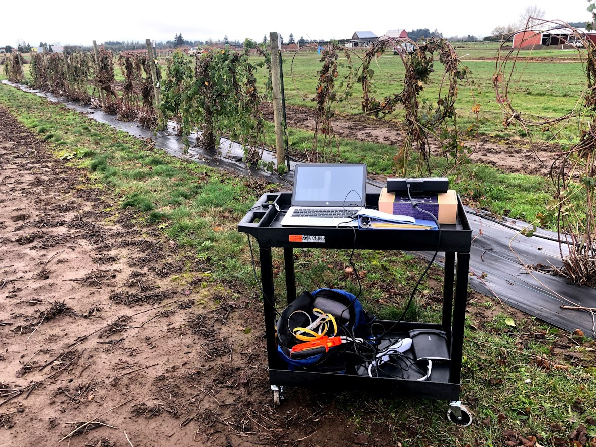
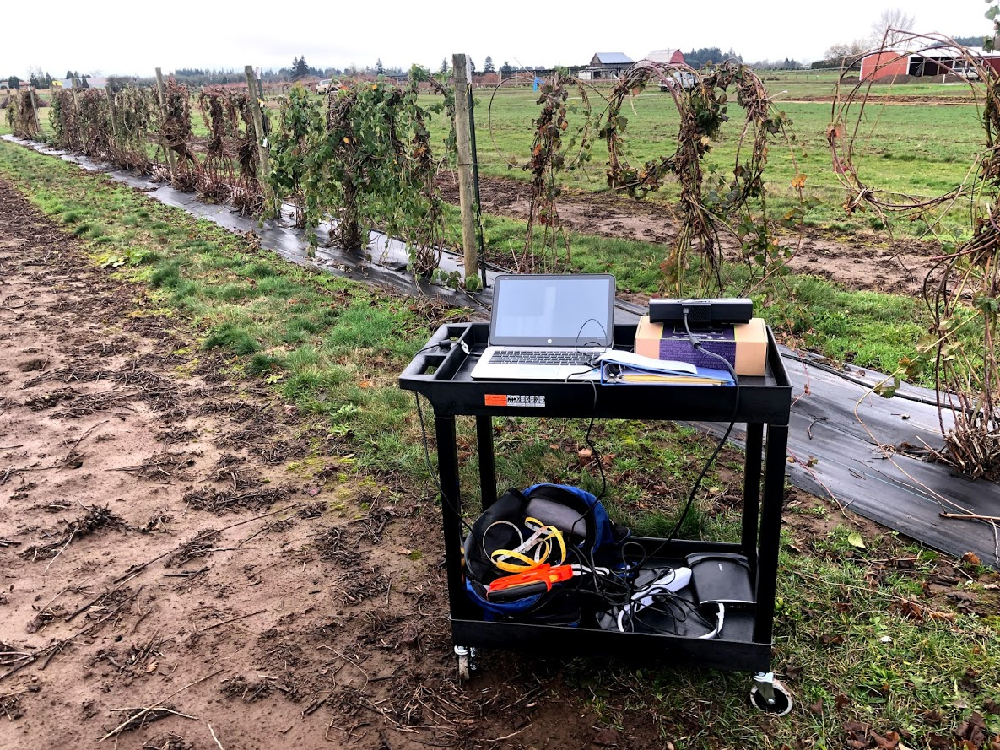

My Projects
You can hover over any image to make it larger
Creating Simulation Models from Point Clouds
This project was to create an algorithm to used scan RGBD images from an Xbox Kinect to create 3D models that could be used for optimization simulation. The algorithm worked by creating a point cloud, with each point having RGB data associated with it, and then stitching the points together to create a cohesive model. You can download the full-size poster by following the link, as well as download the full paper of the findings by clicking on the image of the paper.
 


Download the Full Paper by clicking above.
Creating Custom End-Effector for Apple Pruning Robot
This project was to design, fabricate and build an end-effector to be used by a robot for autonomous apple pruning. The effector was pneumatically actuated, mimicking a common heavy-duty shear that one would find off-the-shelf. A linkage system was utilized to maximize the output shearing force while minimizing the required actuation distance.
Creating a Force-Recognition Glove
This project was to design, calibrate, and test a glove that utilized soft force (pressure) sensors that could be used to determine strain in the hand muscles from different tasks.
Use the "Contact Me" Page if you want more information.